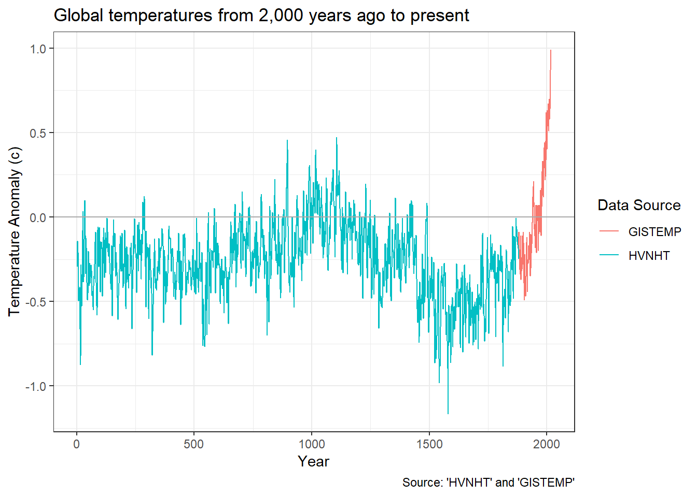
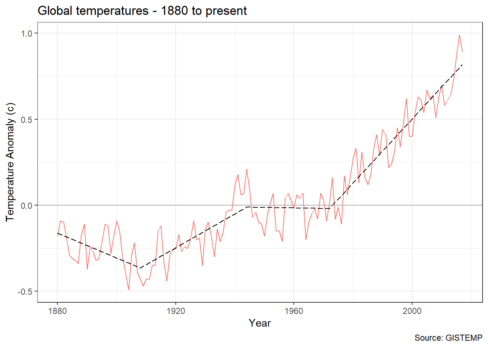
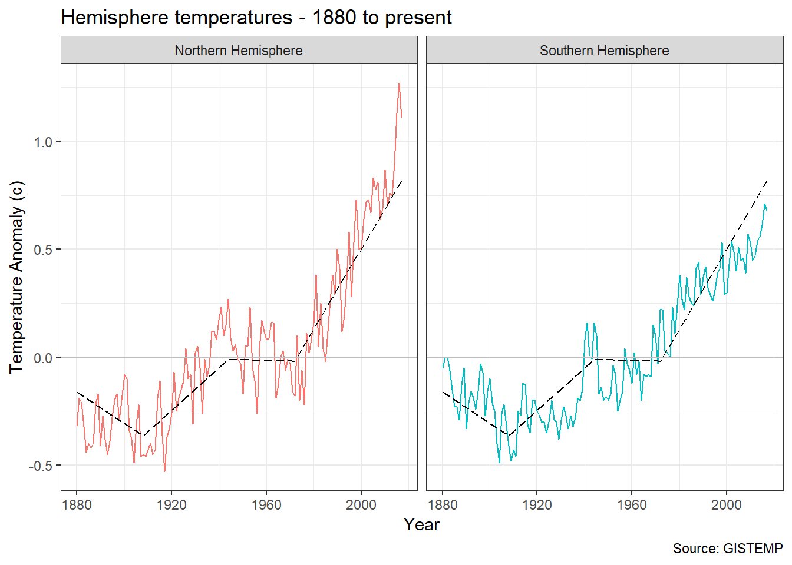
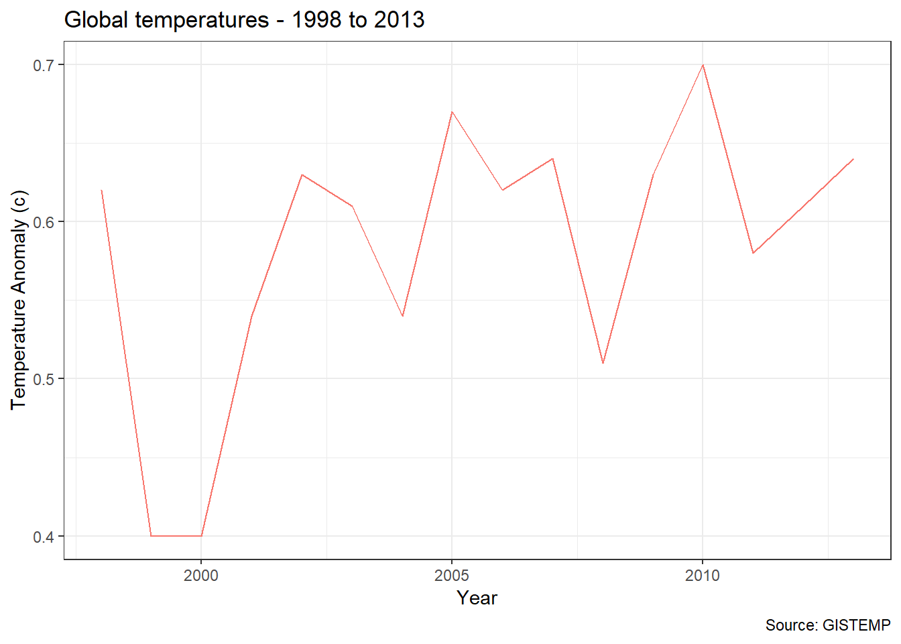
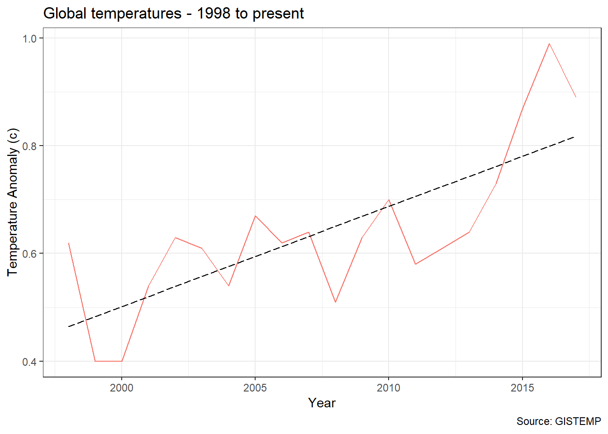

Discovering Climate Change - The Temperature Record
Matthew Coad
30 August 2018
Introduction
A little while after christmas I was doing data science practice in the Pixel Bar, just down the road from where I live. Using some of the sample data sets I had I was seeing if I could “replicate” some well-know principles. Like the squared relationship between a vehicles speed and its stopping distance, or the 11-year solar cycle from historical sunspot numbers.
Being a gaming bar, the pixel was full of geeks as it usually is, and I over-heard someone complaining about having to share christmas dinner with their climate-change denialist relatives.
One of the points that one of the relatives made, was that they didn’t have the neccessary skill or knowledge to interpret what was being handed down to them. That it in their case accepting the theory of anthropogenic climate change would be matter of taking it on faith.
The geeks collectively admitted that they likewise lacked the neccessary skill or knowledge to access or interpret the ideas being proposed by the scientific community. But lacking a better alternative they accepted it.
Which leads to an interesting question? Are my own beliefs on anthropogenic climate change based on any real knowledge or are they essentially just an appeal to authority of the scientific community.
And If I wanted to resolve this, could I, using the publically available data and my growing data science skills, build a justified opinion in regard to anthropogenic climate change. And to really show off, try to present my findings in an accessible way, to in effect, bring my readers along with me.
I hope this article will be the first in a series that does precisely this. I plan to present the publically available data sets. And then using them, see what I can find out about the various ideas kicking regarding climate change.
Turning up the heat global, means what exactly?
What does it mean to say that the global temperature has increased by 0.8 degrees celcius, when on a typical day its 11c here in Melbourne, 27c in New York and -66c at Vostok Station in Antartica. What is the temperature of a region when one any given that the actual temperature is varying across that region?
In the context of climate change the temperatures provided are actually temperature anomalies. The temperature anomaly is determined at each individual station that is monitoring the temperature. For each station we determine the average temperature at that station across a given period of time. We call this the base line. The temperature anomaly for a specific monitoring station is the difference between the temperature on any given day versus that base line temperature for that station.
A weather station at the bottom of a valley might record a very different set of temperatures as compared to a weather station on top of a nearby mountain. But by averaging the differences from the base-line at each station, you can get an idea of the temperature changes across a region.
As well as determining the temperature anamoly for a geographic region, you can determine them across different time spans. And in the publically available data sets, the temperature anamolies are given for a variety of regions and time-spans. Examples include: the entire world per month. or the northern hemisphere versus the southern hemisphere per year.
Lets see that slapshot.
So lets hit google, search for ‘global historical temperature’ and see what we can find.
The NASA Goddard Institute for Space Studies has a group called GISTEMP thats been pulling together temperature data for years. It looks real neat but only goes back to 1880. From now on I’ll call this dataset GISTEMP.
The website Global Temperature Record has a number of data sets for download and we can go back to the birth of Jesus by grabbing the ‘Highly variable Northern Hemisphere temperatures reconstructed from low- and high-resolution proxy data.’. It goes back to 0A.D. and I’ll call this dataset HVNHT.
Lets combine these datasets together and use it to plot global temperature from the birth of Jesus to the present.

And look what we have. It’s replication of the infamous hockey stick graph. It shows the temperature shuffling around for the last 2,000 years and boom it shoots off in the 20th century.
2000 years ago? Hang On, Did the Romans have thermometers?
No. It appears that none of the ancient civilations had anything like a thermometer and there is no continuous written record of temperature that can be used.
The temperature records prior to 1880 (HVNHT) are reconstructions generated by examining sediment cores, ice cores, stalagmites and tree-rings. After 1880 (GISTEMP) there were enough instrument records around that we start using them instead.
In order to calibrate and check the accuracy of this sort of method, the researchers continued their HVHNT record till recent times and then cross checked it against records based on instrument readings when they became available.
Breaking it down, 1880 style!
Its 1880. Thomas Eidson helps back the very first edition of the journal “Science”. The Kelly gang are duking it out in Glenrowan. You can check out P.T. Barnum’s circus in downtown Bridgeport. And now there are enough temperature records kicking around that we can start using them instead of digging through sediment cores.
Lets focus in on that post 1880 GISTEMP data.

Okay we can see the temperature bouncing around a bit and then it really starts shooting up at around 1970.
I’ve unleashed a little bit of machine learning to put a trend line on the graph. I asked the machine to find a number of straight line segments that best fit the temperature vs year plot. It choose the 4 line segments shown above. It helps illustrate the trend in global temperatures. Keep note of that trend line as it will appear in later graphs.
North vs South
In 1880 the US Civil war ended just 15 years ago. However by this time we’ve got now got enough documented temperature measurements from around the world that the guys at NASA reckon we can start looking at the temperature anamoly for different parts of the world. The GISTEMP data divides the earth up into zones based on ranges of latitude. Like the northern hemisphere versus the southern hemisphere, or the polar regions versus the tropics.
Lets compare the temperature changes in the Northern Hemisphere versus the Southern Hemisphere, along with that global trend line.

While the different hemisphere are pretty similar, there is a bit of variation, In particular there looks to be a notable deviation from 2000 onward, with the northern hemisphere heating up faster than the southern hemisphere.
A likely explanation for this is the differences in geopgraphy between the hemispheres. The southern hemisphere has a lot less landmass than the northern hemisphere. Apparently large bodies of water tend to dampen down and smooth out the warming effect.
Hypothesis Road Test - Its not actually warming!
In a hypothesis road test I take a commonly given hypothesis regarding climate change and use the data I’ve got at hand to give it a bit of a shake down.
There isn’t a great deal we can do with just the temperature data on its own. But we can test something. And that is that the globe isnt actually warming at all!
Given what we’ve seen so far it sounds pretty crazy. However as always the devil is in the details. Specifically the idea is that the global warming trend stopped in 1998.
To see where the idea is coming from lets zoom in on that global temperature data from 1998 to 2013.

Okay at a global level, for 15 years or so it looks like there wasn’t much warming.
But lets see what happens if we do that split into northern vs southern hemispheres again?

For good measure I’ve left that global trend line in there as well.
From this plot you can see that the northern hemisphere warming continued unabated in accordance with the global trend. What happened is that the southern hemisphere had a pause in global warming.
Good news for the Southern Hemisphere? Well here in South East Australia that was actually a pretty crazy time. We had the worst drought in recorded history and it lasted for close to a decade. We had water restrictions for years on end and hey this is Australia, we know about drought. At least we thought we did. Climate change loomed pretty large for a while.
If you read up about it starts to talk about things like El Nino and cycles in the suns brightness being involved in that pause. Without some more data or information its hard to say much more about the issue.
I won’t bore with plots of the different region breakdowns but suffice it to say they show the same variations on a theme as the northern hemisphere versus the southern hemisphere.
However that was then. What about now?
Well that pause was big news in 2013. Now lets let time advance to the present.

With the return of the trend line and a few more years of data it now looks like global warming never stopped. The temperature Was up a tad, then it chugged along flat for a bit while the southern oceans shuffled heat around for a decade or so. Then bam its back baby.
Road Test Conclusion: Looked nice on the street fresh of the car yard, but the shine faded over time. 2 Stars.
Data Sources
GISTEMP
GISTEMP Team, 2018: GISS Surface Temperature Analysis (GISTEMP). NASA Goddard Institute for Space Studies. Dataset accessed 2018-09-03 at https://data.giss.nasa.gov/gistemp/.
NVHNT
Northern Hemisphere temperatures reconstructed by statistically combining long-term fluctuations recorded by 11 low-resolution proxy series (lake and ocean sediments, ice cores, stalagmites) and short- term variations recorded by 7 tree-rings series. The reconstruction was calibrated by matching its mean and variance to the instrumental record of Northern Hemisphere annual mean temperature over the period of overlap (CE 1856-1979).
Credits: Moberg, A., D.M. Sonechkin, K. Holmgren, N.M. Datsenko, and W. Karlén. 2005. Highly variable Northern Hemisphere temperatures reconstructed from low- and high-resolution proxy data. Nature, Vol. 433, pp. 613-617.
Dataset accessed 2018-09-03 at http://www.temperaturerecord.org/.